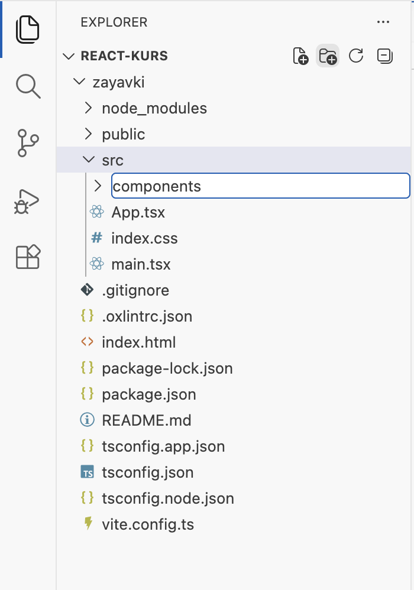
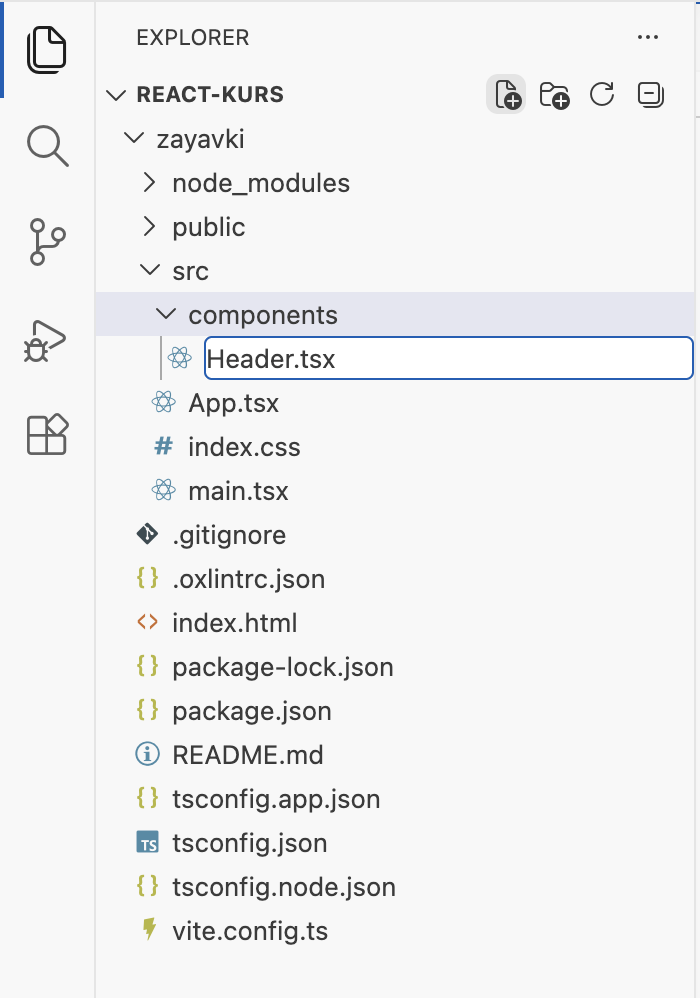
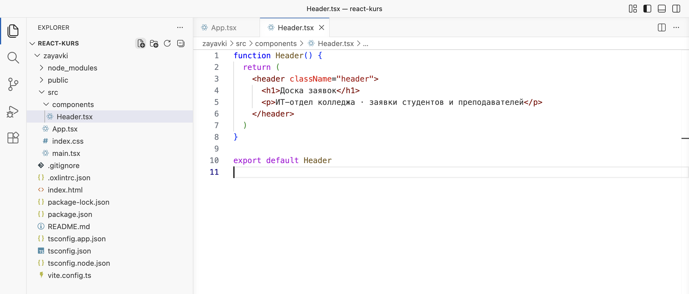
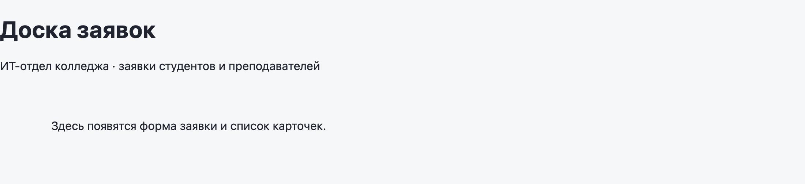
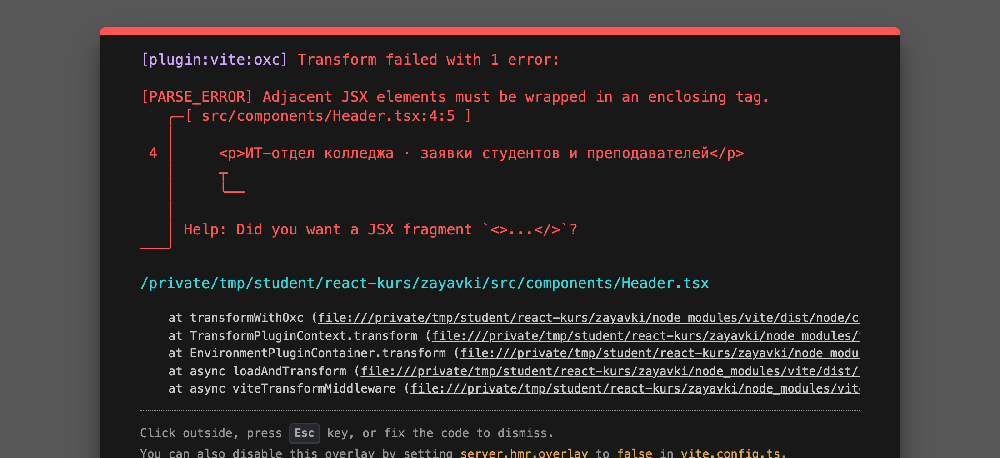
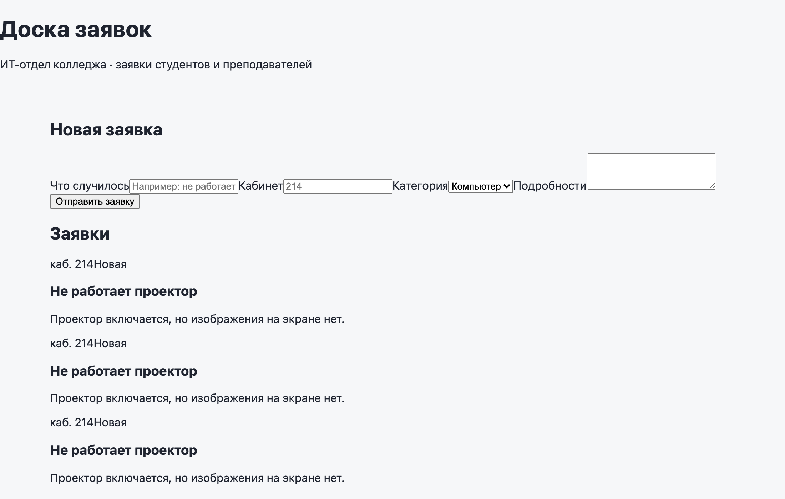
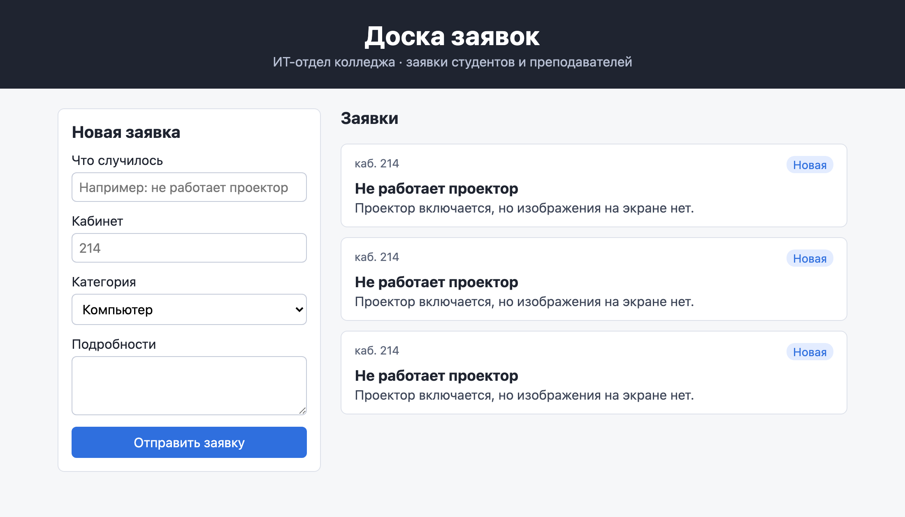
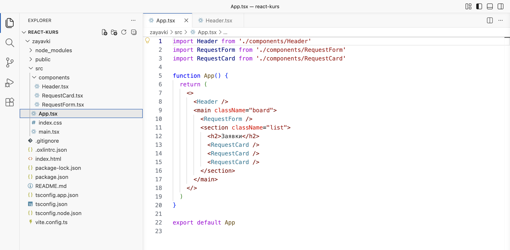

Справочник по Angular и React · модуль 1 · первый проект и первый бот
1.2
JSX
и компоненты
В этой главе разобрано, что такое JSX и по каким правилам он записывается, что такое компонент и как разнести компоненты по отдельным файлам. Заготовка доски заявок из главы 1.1 делится на три компонента: шапку, форму заявки и карточку заявки, и получает стили. В конце главы на доске три одинаковые карточки; как сделать их разными, разобрано в главе 1.3.
- Категория
- React
- Уровень
- Начальный
- Что понадобится
- Проект
zayavkiиз главы 1.1 (или архив ниже) и запущенныйnpm run dev - Результат
- Доска заявок из компонентов Header, RequestForm и RequestCard со стилями
Если проекта нет или он в другом состоянии
Архив содержит проект zayavki в том состоянии, с которого начинается глава, — после главы 1.1. Папки node_modules в архиве нет: её создаёт команда npm install по списку пакетов из package.json.
- Распакуйте архив в папку с проектами курса, например
react-kurs. Появится папкаzayavki. Если папка с таким именем там уже есть, сначала переименуйте старую, например вzayavki-staraya. - Откройте папку курса в VS Code: File → Open Folder.
- Откройте терминал (Terminal → New Terminal) и выполните три команды по очереди. Последняя запускает сервер разработки; страница открывается по адресу
http://localhost:5173/.
cd zayavki npm install npm run dev
§1Что такое JSX
Бланк заявления состоит из постоянного текста и пустых полей: «Прошу отремонтировать ____ в кабинете ____». Постоянный текст одинаков для всех, а в поля каждый раз вписывается своё.
Бланк заполняют один раз, а JSX пересчитывается каждый раз, когда меняются данные, и поля в нём заполняются автоматически.
JSX — запись разметки внутри кода JavaScript или TypeScript. Он выглядит как HTML: теги, атрибуты, вложенность. В отличие от HTML, в разметку JSX можно подставить любое значение из кода: переменную, вычисление, вызов функции. Место подстановки обозначается фигурными скобками, как пустое поле бланка.
const room = 214 return <p>Заявка из кабинета {room}</p>
В первой строке объявлена переменная room со значением 214. Во второй строке JSX записан после слова return: функция возвращает абзац. Текст «Заявка из кабинета» — постоянная часть, а на место {room} при выводе подставится 214. На странице получится «Заявка из кабинета 214». Внутри фигурных скобок может стоять любое выражение JavaScript, например {room + 1} или {'каб. ' + room}.
Во что превращается JSX
Браузер JSX не выполняет. Когда браузер запрашивает файл компонента, Vite переводит каждый тег в вызов функции. Ниже — часть того, что Vite отдал браузеру вместо шапки, которая будет создана в §3. Этот код записывается не руками; он показан, чтобы было видно, откуда берутся правила JSX.
_jsxDEV("header", { className: "header", children: [ _jsxDEV("h1", { children: "Доска заявок" }), _jsxDEV("p", { children: "ИТ-отдел колледжа · заявки студентов и преподавателей" }) ] })
Каждый тег стал вызовом функции _jsxDEV. Первым передаётся имя тега ("header"), вторым — объект с атрибутами, а вложенные теги попадают в список children (дети). Из этого следуют два правила JSX, которые встретятся в главе. Первое: функция возвращает одно значение, поэтому у разметки, которую возвращает компонент, должен быть один общий внешний элемент. Второе: атрибуты становятся полями объекта JavaScript, поэтому их имена подчиняются правилам JavaScript — отсюда className вместо class (§3) и htmlFor вместо for (§4).
JSX описывает кусок интерфейса. Чтобы этот кусок можно было использовать много раз, его оборачивают в функцию — компонент.
§2Что такое компонент
В конструкторе одну деталь — например, окно — делают по одной форме и ставят в модель столько раз, сколько нужно. Если форму окна изменить, изменятся все окна в модели.
Детали конструктора одинаковы, а компоненту можно передать данные, и одна и та же форма даст разные окна — это предмет главы 1.3.
Компонент — функция, которая возвращает JSX. Имя компонента пишется с заглавной буквы: Header, RequestForm. Компонент используется в разметке другого компонента как тег: <Header />. По заглавной букве React отличает компонент от обычного тега HTML: <header> — элемент страницы, <Header /> — вызов функции Header и вывод того, что она вернула.
В главе 1.1 в проекте уже был один компонент — App в файле App.tsx. Держать всю страницу в одном компоненте неудобно: файл растёт, и в нём трудно найти нужное место. Поэтому интерфейс делят на компоненты по смыслу, и каждый компонент кладут в отдельный файл. Для доски заявок их будет три: Header — шапка с названием, RequestForm — форма новой заявки, RequestCard — карточка одной заявки. Компонент App собирает их на странице.
Как компонент попадает из одного файла в другой
Файл компонента заканчивается строкой export default Header. Слово export делает функцию доступной другим файлам, default — делает её главной частью файла. В файле, где компонент нужен, его подключают строкой import Header from './components/Header'. Путь начинается с ./ — «от папки текущего файла», расширение .tsx не пишется: Vite находит файл сам. Имя после import выбирается при подключении, но принято использовать то же, что у функции.
§3Первый компонент: шапка
Работа идёт в проекте zayavki, сервер разработки запущен командой npm run dev, страница localhost:5173 открыта в браузере (глава 1.1, «Как вернуться к проекту»). Компоненты хранятся в отдельной папке src/components, чтобы не смешивать их с файлами main.tsx и index.css.
ДелаемСоздаём шапку
- Создайте папку components
В проводнике VS Code щёлкните по папке
src, чтобы выделить её. Наведите курсор на строку REACT-KURS: справа появятся кнопки. Нажмите вторую — New Folder… (папка с плюсом). Подsrcпоявится поле ввода; введитеcomponentsи нажмите Enter.
Новая папка внутри src: имя components набрано в поле ввода - Создайте файл Header.tsx
Щёлкните по новой папке
components, затем нажмите первую кнопку — New File… (лист с плюсом). ВведитеHeader.tsxс заглавной буквы и нажмите Enter. Файл откроется справа пустым.
Новый файл внутри components: имя Header.tsx - Вставьте код шапки и сохраните
zayavki/src/components/Header.tsx function Header() { return ( <header className="header"> <h1>Доска заявок</h1> <p>ИТ-отдел колледжа · заявки студентов и преподавателей</p> </header> ) } export default Header

Так должен выглядеть Header.tsx: 10 строк, файл в папке components
РазбираемсяЧто написано в Header.tsx
Код шапки разобран по строкам. function Header() { … } объявляет компонент — функцию с именем Header, которая ничего не получает (пустые скобки) и возвращает разметку. После return стоит JSX в круглых скобках: скобки нужны, чтобы разметку можно было начать с новой строки. Внешний элемент — <header>, тег HTML для шапки страницы или раздела. Внутри него заголовок <h1> и абзац <p> с подписью. Последняя строка export default Header делает компонент доступным другим файлам.
У тега <header> записан атрибут className="header". В HTML этот атрибут называется class, но слово class в JavaScript занято: им объявляют классы. Поэтому в JSX атрибут называется className, а в браузере он превращается в обычный class. По имени класса стили из index.css находят элемент; стили будут добавлены в §6.
ДелаемПодключаем шапку в App
- Замените содержимое App.tsx
Шапка создана, но на странице её ещё нет:
main.tsxвыводит толькоApp, а вAppшапка не подключена. Откройтеsrc/App.tsx, выделите весь текст (Ctrl+A), вставьте код ниже и сохраните.zayavki/src/App.tsx import Header from './components/Header' function App() { return ( <> <Header /> <main> <p>Здесь появятся форма заявки и список карточек.</p> </main> </> ) } export default App
- Посмотрите на страницу
Перейдите в браузер. Страница обновилась сама: сверху заголовок и подпись из шапки, под ними абзац из
<main>.
Страница после сохранения: шапка выведена, стилей у неё пока нет
РазбираемсяКак App выводит шапку
Первая строка подключает компонент из файла components/Header.tsx. В разметке <Header /> выводит шапку; косая черта в конце означает, что у тега нет содержимого. Заголовок <h1> из App убран: он теперь в шапке.
В начале разметки стоят пустые угловые скобки <>, в конце — </>. Компонент App теперь возвращает два элемента подряд — шапку и <main>, а функция может вернуть только одно значение (§1). Пустые скобки — это фрагмент: обёртка, которая объединяет несколько элементов в один для React, но в браузере никакого тега не создаёт. Если обернуть в <div>, на странице появится лишний блок; фрагмент этого не делает.
Шапка прижата к левому краю без отступов: правило main из index.css на неё не действует, потому что шапка стоит вне <main>.
ДелаемОпыт: два элемента без общей обёртки
- Замените содержимое Header.tsx версией для опыта
В этой версии убран тег
<header>, и функция возвращает два элемента подряд. Замените весь текстHeader.tsxи сохраните.Header.tsx без общей обёртки (для опыта) function Header() { return ( <h1>Доска заявок</h1> <p>ИТ-отдел колледжа · заявки студентов и преподавателей</p> ) } export default Header
- Посмотрите на страницу
Поверх страницы появилось окно с ошибкой.

Ошибка Vite поверх страницы: соседние элементы JSX без общей обёртки
РазбираемсяЧто написано в ошибке
Vite не смог перевести файл и показал ошибку поверх страницы. Строка [plugin:vite:oxc] Transform failed with 1 error означает, что перевод файла (transform) не удался. Дальше сама ошибка: Adjacent JSX elements must be wrapped in an enclosing tag — «соседние элементы JSX должны быть обёрнуты в общий тег». Ниже указаны файл и место: src/components/Header.tsx:4:5 — строка 4, символ 5, где начинается второй элемент. Последняя строка — подсказка: Did you want a JSX fragment <>...</>? — «может быть, нужен фрагмент». Та же ошибка видна в терминале, где работает Vite.
ДелаемВозвращаем шапку
- Верните правильный код Header.tsx
Замените весь текст
Header.tsxкодом ниже и сохраните. Окно с ошибкой исчезнет само, страницу перезагружать не нужно.zayavki/src/components/Header.tsx function Header() { return ( <header className="header"> <h1>Доска заявок</h1> <p>ИТ-отдел колледжа · заявки студентов и преподавателей</p> </header> ) } export default Header
Шапка содержит только текст. В форме заявки появятся поля ввода, и с ними — ещё несколько правил JSX.
§4Форма заявки и правила атрибутов
Форма собирает заявку: что случилось, в каком кабинете, к какой категории относится и подробности. В этой главе форма только выводится на странице. Как сохранять введённый текст и отправлять заявку, разобрано в главах 1.4 и 1.6.
ДелаемСоздаём форму
- Создайте файл RequestForm.tsx
Так же, как в §3: выделите папку
components, нажмите New File…, введитеRequestForm.tsxи нажмите Enter. - Вставьте код формы и сохраните
zayavki/src/components/RequestForm.tsx function RequestForm() { return ( <form className="form"> <h2>Новая заявка</h2> <label htmlFor="title">Что случилось</label> <input id="title" type="text" placeholder="Например: не работает проектор" /> <label htmlFor="room">Кабинет</label> <input id="room" type="text" placeholder="214" /> <label htmlFor="category">Категория</label> <select id="category"> <option>Компьютер</option> <option>Проектор</option> <option>Принтер</option> <option>Интернет</option> </select> <label htmlFor="details">Подробности</label> <textarea id="details" rows={3} /> <button type="submit">Отправить заявку</button> </form> ) } export default RequestForm
Страница в браузере пока не меняется: форма ещё не подключена в
App. Её подключит §6.
РазбираемсяТри правила JSX в коде формы
Форма состоит из пар «подпись — поле». Внешний элемент — <form className="form">, внутри заголовок <h2>, четыре пары и кнопка. В коде формы встречаются три правила JSX, которых не было в шапке.
Правило 1: htmlFor вместо for
Тег <label> — подпись к полю. Атрибут htmlFor="title" связывает подпись с полем, у которого id="title". Связь нужна по двум причинам. Щелчок по подписи ставит курсор в поле. Программа чтения экрана для незрячих пользователей читает подпись, когда пользователь попадает в поле. В HTML этот атрибут называется for, но for в JavaScript — слово для цикла, поэтому в JSX пишут htmlFor. Это тот же случай, что с className.
Правило 2: каждый тег закрыт
В HTML у некоторых тегов нет закрывающей пары: <input>, <img>, <br>. В JSX закрытым должен быть каждый тег. Тег без содержимого закрывается косой чертой в конце: <input … />, <textarea … />. Если черту пропустить, Vite покажет ошибку Expected corresponding JSX closing tag for 'input' — «ожидался закрывающий тег для input».
Правило 3: числа и выражения — в фигурных скобках
У поля подробностей записано rows={3} — высота поля в три строки. Значение в кавычках JSX передаёт как строку, а в фигурных скобках — как значение JavaScript, здесь число 3. Для чисел, переменных и вычислений используются скобки, для постоянного текста — кавычки.
Остальные теги формы — обычный HTML. <input type="text"> — однострочное поле, placeholder — серая подсказка внутри пустого поля. <select> — выпадающий список, внутри него варианты <option>. <textarea> — многострочное поле. <button type="submit"> — кнопка отправки формы.
По умолчанию браузер при отправке формы перезагружает страницу. Поэтому, если нажать «Отправить заявку», страница мигнёт и поля очистятся. В главе 1.6 отправка будет перехвачена кодом, и перезагрузка прекратится.
§5Карточка заявки
Карточка показывает одну заявку: кабинет, статус, тему и подробности.
ДелаемСоздаём карточку
- Создайте файл RequestCard.tsx
Выделите папку
components, нажмите New File…, введитеRequestCard.tsxи нажмите Enter. - Вставьте код карточки и сохраните
zayavki/src/components/RequestCard.tsx function RequestCard() { return ( <article className="card"> <div className="card__top"> <span className="card__room">каб. 214</span> <span className="card__status">Новая</span> </div> <h3>Не работает проектор</h3> <p>Проектор включается, но изображения на экране нет.</p> </article> ) } export default RequestCard
Страница пока не меняется: карточку подключит
Appв §6.
РазбираемсяЧто написано в RequestCard.tsx
Внешний элемент — <article>: тег HTML для самостоятельного блока, который имеет смысл и отдельно от страницы, как заметка или карточка. Верхняя строка card__top содержит кабинет и статус в двух элементах <span>. Ниже заголовок заявки <h3> и описание <p>. Заголовки идут по уровням: h1 — название страницы в шапке, h2 — разделы «Новая заявка» и «Заявки», h3 — заявка внутри раздела. Программы чтения экрана строят по уровням заголовков оглавление страницы.
Имена классов записаны по одному правилу: имя блока (card), два подчёркивания и имя части блока (room, status, top). Такое правило называется БЭМ (блок, элемент, модификатор). По имени card__status сразу видно, что это статус внутри карточки, и стили разных компонентов не пересекаются.
Текст карточки пока записан прямо в коде: каждая карточка будет показывать один и тот же проектор в кабинете 214. Это сделано намеренно, к этому вернётся §7.
§6Сборка страницы и стили
Все три компонента готовы. Компонент App собирает из них страницу: шапка сверху, ниже в две колонки форма и список заявок. Затем к классам компонентов добавляются стили.
ДелаемСобираем страницу
- Замените содержимое App.tsx
Откройте
src/App.tsx, замените весь текст кодом ниже и сохраните.zayavki/src/App.tsx import Header from './components/Header' import RequestForm from './components/RequestForm' import RequestCard from './components/RequestCard' function App() { return ( <> <Header /> <main className="board"> <RequestForm /> <section className="list"> <h2>Заявки</h2> <RequestCard /> <RequestCard /> <RequestCard /> </section> </main> </> ) } export default App
- Посмотрите на страницу
Все компоненты на месте, но выглядят как обычный документ: поля формы стоят в одну строку, карточки не отделены друг от друга. Стилей для новых классов ещё нет.

Страница после сохранения App.tsx: все компоненты на месте, стилей для них ещё нет - Замените содержимое index.css
Откройте
src/index.css, замените весь текст кодом ниже и сохраните.zayavki/src/index.css :root { font-family: system-ui, 'Segoe UI', Roboto, sans-serif; color: #1f2430; background: #f6f7f9; } body { margin: 0; } .header { padding: 24px 20px; background: #1f2430; color: #ffffff; text-align: center; } .header h1 { margin: 0 0 4px; } .header p { margin: 0; color: #b8c0d4; } .board { display: grid; grid-template-columns: 320px 1fr; gap: 24px; max-width: 960px; margin: 0 auto; padding: 24px 20px; } .form { display: flex; flex-direction: column; gap: 6px; padding: 16px; background: #ffffff; border: 1px solid #dde1ea; border-radius: 8px; } .form h2, .list h2 { margin: 0 0 8px; font-size: 20px; } .form input, .form select, .form textarea { margin-bottom: 8px; padding: 8px; border: 1px solid #c4cad8; border-radius: 6px; font: inherit; } .form button { padding: 10px; border: 0; border-radius: 6px; background: #2f6fde; color: #ffffff; font: inherit; cursor: pointer; } .list { display: flex; flex-direction: column; gap: 12px; } .card { padding: 14px 16px; background: #ffffff; border: 1px solid #dde1ea; border-radius: 8px; } .card__top { display: flex; justify-content: space-between; font-size: 14px; } .card__room { color: #5b6478; } .card__status { padding: 2px 8px; border-radius: 10px; background: #e3ecff; color: #2f6fde; } .card h3 { margin: 8px 0 4px; font-size: 18px; } .card p { margin: 0; color: #3d4557; } @media (max-width: 700px) { .board { grid-template-columns: 1fr; } } - Проверьте страницу
Шапка тёмная, слева форма, справа три карточки.

Так должна выглядеть страница: шапка, форма слева, три карточки справа - Проверьте проект
В проводнике в папке
src/componentsтри файла компонентов, вApp.tsxтри строкиimport. Если страница и проект выглядят как на кадрах, проект готов к главе 1.3.
Так должен выглядеть проект: три компонента в папке components, App.tsx их подключает
РазбираемсяКак App собирает страницу
Три строки import подключают компоненты из папки components. Разметка обёрнута во фрагмент, как в §3. Внутри <main className="board"> два блока: форма <RequestForm /> и раздел <section className="list"> с заголовком и тремя карточками. Каждое <RequestCard /> — отдельный вызов функции RequestCard, поэтому на странице появятся три карточки.
РазбираемсяКак работают стили
Стили привязаны к классам из компонентов. Правило .header даёт шапке тёмный фон, белый текст и выравнивание по центру. Правило .board делит страницу на две колонки. display: grid включает сетку. grid-template-columns: 320px 1fr задаёт левую колонку шириной 320 пикселей. Правой колонке достаётся всё оставшееся место: 1fr означает одну долю свободного места. Правила .form и .list ставят свои элементы в столбик (display: flex и flex-direction: column) с промежутком gap. Правила .card… оформляют карточку: рамку, скругление углов, кабинет слева и статус справа в верхней строке. Последнее правило @media (max-width: 700px) на узком экране, например телефона, ставит форму и список в одну колонку.
§7Дерево компонентов
Компоненты вложены друг в друга, и вместе они образуют дерево — так же, как в главе 0.1. Корень дерева — App, он содержит шапку, форму и три карточки.
Дерево компонентов доски заявок
Голубым отмечены три вызова одного компонента RequestCard. Функция одна и та же, и данных снаружи она не получает, поэтому все три карточки выглядят одинаково.
На доске три карточки с одним и тем же текстом: «Не работает проектор, каб. 214». Чтобы показать три разные заявки, можно было бы сделать три компонента — ProjectorCard, PrinterCard, InternetCard. Но тогда на сотню заявок понадобится сотня компонентов с одинаковой разметкой. Компонент нужно сделать один, а данные — тему, кабинет, статус — передавать ему при вызове, как значения в поля бланка. Механизм передачи данных в компонент называется props и разобран в главе 1.3.
Проект после главы
Архив содержит проект zayavki в состоянии конца главы. По нему можно сверить свой код или начать следующую главу. Распаковка и запуск — как у архива в начале главы.
§8Частые ошибки
Все сообщения ниже получены в проекте zayavki на Vite 8 и React 19. Ошибки разбора JSX Vite показывает поверх страницы и в терминале; ошибки React видны в консоли браузера (F12 → вкладка Console); ошибки TypeScript VS Code подчёркивает красным в редакторе.
| Что видно | Почему | Что сделать |
|---|---|---|
Поверх страницы: Adjacent JSX elements must be wrapped in an enclosing tag | Компонент возвращает несколько элементов подряд без общей обёртки | Обернуть их в общий тег или во фрагмент <>…</> |
Поверх страницы: Expected corresponding JSX closing tag for 'input' | Тег без содержимого не закрыт | Поставить косую черту: <input … /> |
Поверх страницы: HTML comments are not allowed in modules | В JSX записан комментарий HTML <!-- … --> | Комментарий в JSX пишется так: {/* текст */} |
В консоли: Invalid DOM property `class`. Did you mean `className`? | Атрибут записан как в HTML | Заменить class на className |
В консоли: Invalid DOM property `for`. Did you mean `htmlFor`? | Атрибут подписи записан как в HTML | Заменить for на htmlFor |
Страница пустая, в консоли: Header is not defined; в редакторе: Cannot find name 'Header'. Did you mean 'Headers'? | Компонент используется, но не подключён строкой import. Headers в подсказке — другой, встроенный объект браузера, он здесь не нужен | Добавить в начало файла import Header from './components/Header' |
Страница пустая, в консоли: The requested module '/src/components/Header.tsx' does not provide an export named 'default' | В файле компонента нет строки export default Header | Добавить её в конец файла компонента |
| Вместо шапки на странице пустой блок, ошибок нет | Компонент назван с маленькой буквы (function header), и <header /> React выводит как обычный тег HTML | Назвать компонент с заглавной буквы и использовать как <Header /> |
§9Проверьте себя
Что выведет на страницу код const count = 3 и <p>Заявок: {count + 1}</p>?
«Заявок: 4». В фигурных скобках стоит выражение JavaScript, и на его место подставляется результат вычисления.
Почему в JSX пишут className и htmlFor, а не class и for?
Атрибуты JSX становятся полями объекта JavaScript, а class и for в JavaScript — занятые слова: первым объявляют классы, вторым — циклы. Поэтому React использует имена className и htmlFor и в браузере превращает их в обычные class и for.
Чем фрагмент <>…</> отличается от обёртки <div>…</div>?
Оба объединяют несколько элементов в один, как требует JSX. <div> появляется на странице как отдельный блок и может повлиять на стили и раскладку. Фрагмент в браузере никакого элемента не создаёт.
Как React отличает компонент Header от тега header?
По первой букве. Имя с маленькой буквы React считает тегом HTML и создаёт такой элемент на странице. Имя с заглавной буквы — компонент: React вызывает функцию с этим именем и выводит то, что она вернула.
Что нужно сделать, чтобы компонент из файла RequestCard.tsx можно было использовать в App.tsx?
В конце файла RequestCard.tsx написать export default RequestCard, а в начале App.tsx — import RequestCard from './components/RequestCard'. После этого в разметке App можно писать <RequestCard />.
Почему на доске три одинаковые карточки и почему не стоит делать для каждой заявки свой компонент?
Компонент RequestCard вызывается три раза, а его текст записан внутри функции, поэтому результат одинаковый. Отдельный компонент на каждую заявку означает повтор одной и той же разметки столько раз, сколько заявок. Правильно сделать один компонент и передавать ему данные — это props из главы 1.3.
Шпаргалка
function Header() { return (…) }export default Headerimport Header from './components/Header'<Header /><p>Кабинет {room}</p><> … </>className="card"htmlFor="title"rows={3}{/* текст */}Итог главы
JSX — разметка внутри кода, в которую в фигурных скобках подставляются значения. Vite переводит каждый тег в вызов функции. Поэтому у разметки компонента один внешний элемент или фрагмент <>…</>, каждый тег закрыт, а атрибуты называются по правилам JavaScript: className, htmlFor, числа в фигурных скобках. Компонент — функция с именем с заглавной буквы, которая возвращает JSX; он хранится в своём файле, отдаётся строкой export default и подключается строкой import. Доска заявок собрана из компонентов Header, RequestForm и RequestCard и оформлена стилями. Три карточки на ней одинаковые, потому что компонент не получает данных снаружи.
Источники
- react.dev — Writing Markup with JSX
- react.dev — JavaScript in JSX with Curly Braces
- react.dev — Your First Component
- react.dev — Importing and Exporting Components
- MDN — элемент label